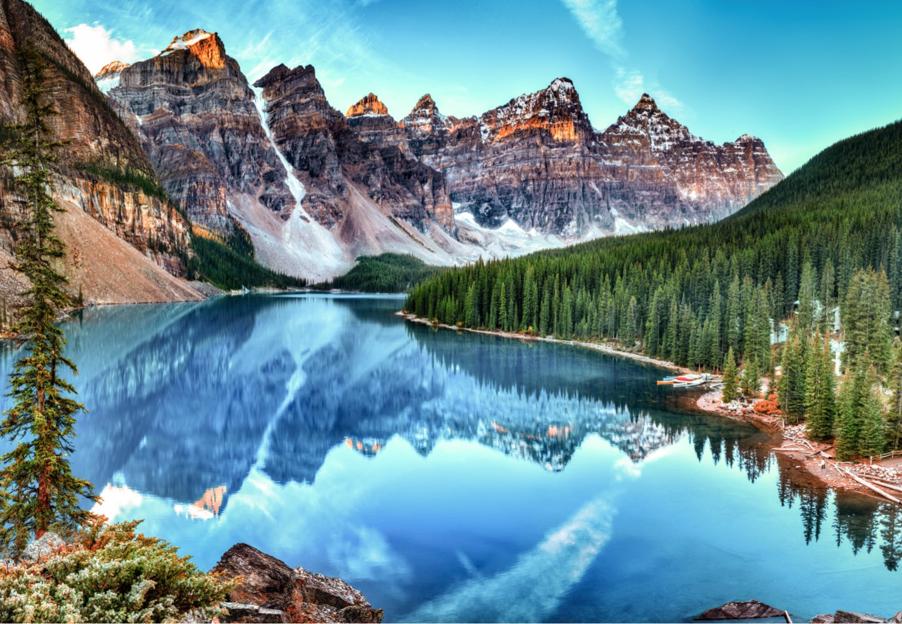

Lugares turísticos de Canadá

Cataratas del Niágara

Las Cataratas del Niágara son una de las maravillas más impresionantes del mundo, con un flujo del agua de más de 168,000 metros cúbicos por minuto. Su belleza escénica destaca por la gran combinación de la fuerza del agua, el arco iris que se forma con la niebla y el paisaje circundante, dejando ver una escena digna de una postal.
Toronto
Toronto es la ciudad más grande de Canadá que posee una rica diversidad cultural que ofrece una gran variedad de atracciones, como el Museo Real de Ontario, la CN Tower y el Distrito Histórico Distillery. Es un destino ideal para quienes buscan una experiencia urbana vibrante.
Parque nacional Banff

El parque nacional Banff es un destino turístico conocido por su belleza natural, actividades al aire libre y rica biodiversidad el cual se ubica en las montañas rocosas de Canadá. El parque alberga glaciares, montañas escarpadas y lagos de un azul intenso. Durante el invierno se convierte en un destino popular para los deportes de nieve